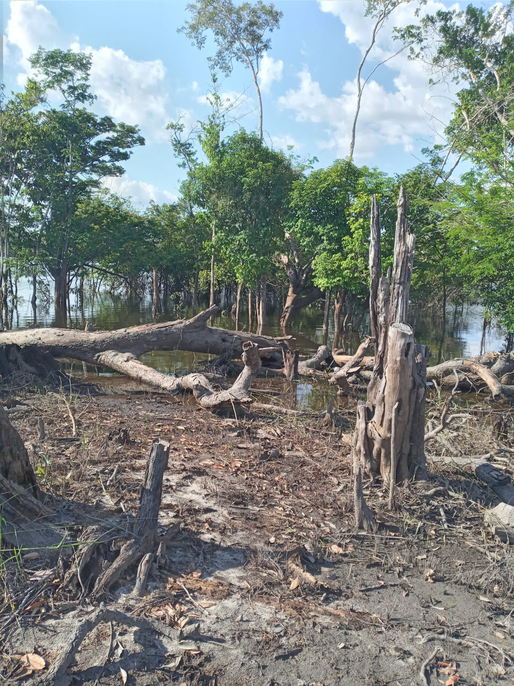
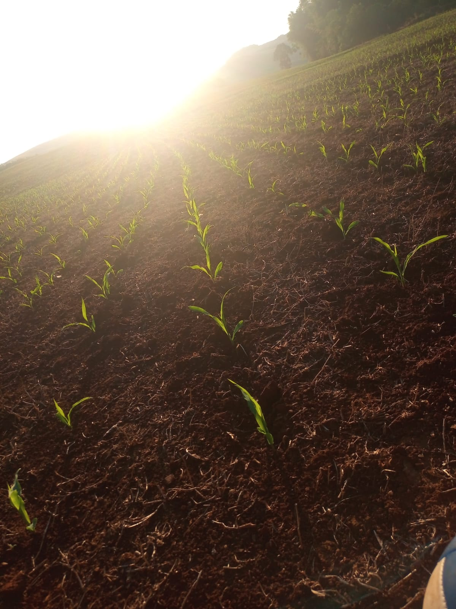
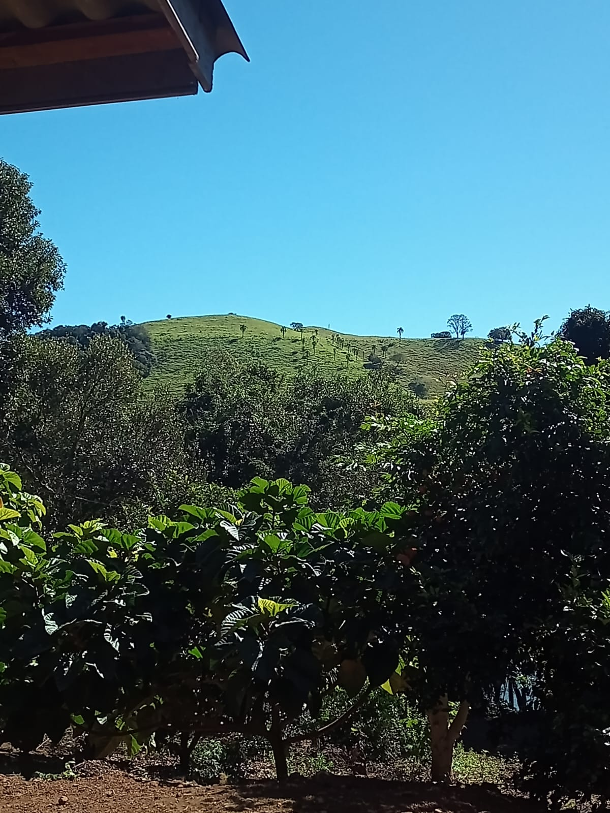

Sustentabilidade Urbana
Fomentamos práticas que reduzem o impacto ambiental nas cidades, como mobilidade limpa, hortas urbanas, reciclagem e consumo consciente.

Agricultura Sustentável
Valorizamos métodos agrícolas que respeitam o meio ambiente e promovem o bem-estar social, como agroecologia, rotação de culturas e agricultura familiar.

Conservação da Biodiversidade
Defendemos a proteção de ecossistemas naturais, com ações educativas e preservação de áreas verdes, conectando sociedade e natureza.